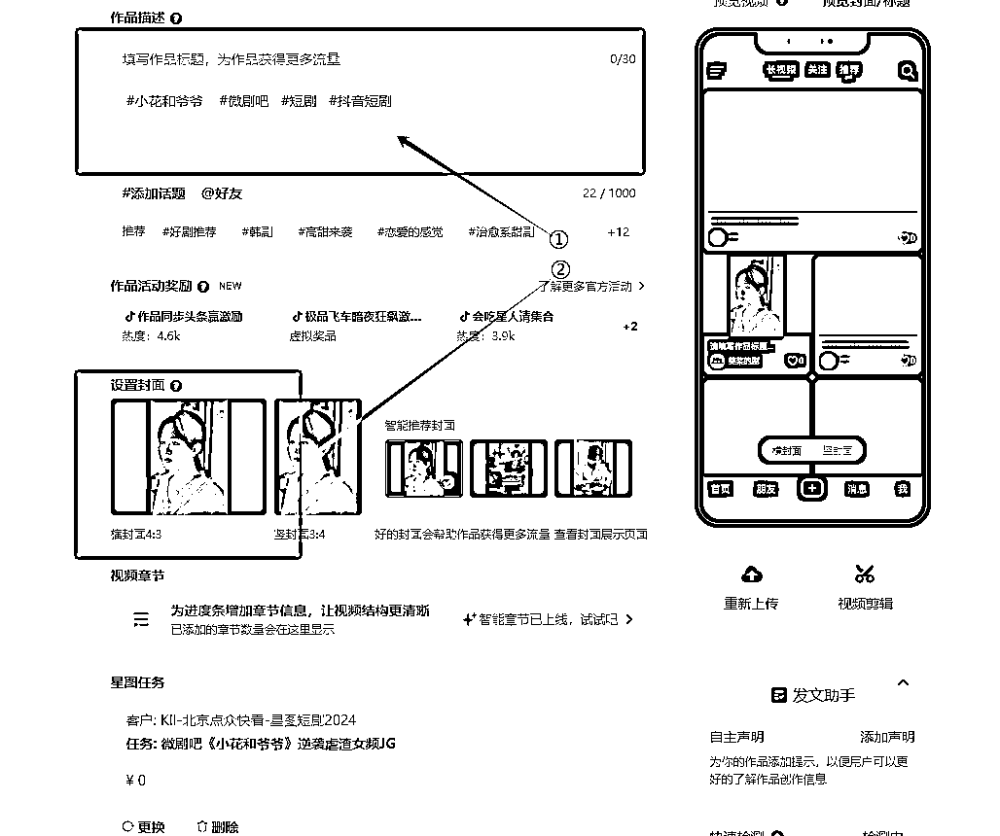

来源：https://mvh6uii5p7e.feishu.cn/docx/MlWddFhNeozTwwx8cizcfCAZnnf
生财圈友大家好，我是唐杰，距离上次分享快手聚星时隔一年多，今天分享一下抖音星图短剧一个月时间，从一个新号变现10来万的玩法。
加入生财这2年当中从一个小白到过手15＋个实战项目
有了自己1家公司，同时还组建了3个合伙分公司
很多朋友见证着我这一路的成长
也感谢成长路上朋友们不惧风雨携手同行
同时感谢生财提供的平台让信息更加透明化
从快手聚星，视频号分成，tk基金这些项目到抖音星图，感觉到还是在抖音上赚钱比较舒心
时间有限废话就不多说了，如今浮躁的气息不如让实战来熄灭它
直接上一部分图，这是我最近一个月做出的效果，变现了10来万
百万播放基本上每个号都会有，转化率万播在100元上下浮动

完全是从0粉新号开始上手操作，一个视频收益几万是庭常见


这个项目起因是我朋友在做，5月份的时候就喊我做没做，因为当时5.6月玩的是搬运，感觉不会有大收获就没放在心上
后边再见面说起来他当时一天收益在5万左右，我有点不可理解，搬运？平均一天5万？什么概念？我电商部一天所有的GMV都不到5万，他这是纯利5万！
在三讨教下我利用闲暇浅试起了第一个号，发了6个作品就爆了，虽然这条作品转化一般，但是反馈快的我反应不过来

其实之前短剧这个项目极其不看好的，感觉这个项目就是推广没什么太大浪花，在实操之后真的是哐哐打脸
整体来说这个项目门槛还是比较低的，千粉即可做，也不用大投入，一台手机，一台电脑就可以执行起来
回报率目前来说还是很可观，跑通速度也够快
唯一的缺点就是耗时间，制作一个作品下来大约要2个小时左右
但是付出和收益还是成正比的
确定放大做这个项目时
我特意邀请了2位执行力在线的朋友还有一位合伙人一块做这个项目
再次测试一下这个项目是运气还是实力做出的结果
基本都做出结果了
不管怎么样，没有空军说明是个好营生


看到了这个反馈效果立马找合伙人单独开一个星图短剧工作室，设备迟迟的才到一部分
为什么要做抖音星图短剧？
1、可以星图可以做到多实名，不受实名拘束
2、抖音星图分佣高达70-80%
3、抖音目前打压非站内链接短剧的同时抖音也在扶持星图短剧的流量
本身短剧流量就很好，加上官方流量扶持，这就是新号基本都能爆的原因
这里就不过多叙述这些信息了，想要了解更多看下星图官方https://creator.douyin.com/creator-school
我们把时间，重点来了解这个项目的打法
其实这套玩法跟我上半年做影视解说带货基本是差不多的逻辑
抖音自始以来都是抄抄，如果你没有文案功底，最简单最直接的就是抄，这也是我们现在使用的方法
1、开头使用爆款的开头视频+洗爆款文案
爆款的开头视频：
在抖音跟爆款跟热点是这几年一直不过时的玩法，别人爆过的视频，你再抄他的爆的几率会很大，这里说的抄，不是直接去水印使用同行的视频，而是在剧方的原素材里重新找到这些镜头进行二剪。
我们是做的5-20分钟的短剧视频，视频爆不爆开头是至关重要的，在没有创作力的情况下只能接受上天赐予，对同行下手
切记开头前5秒非常重要，尽量跟爆款视频一样，相似度达九十左右，因为爆过的有爆过的点，可能稍加改动，这个点就没了。
洗爆款文案：
文案必须要洗，主要是规避抖音的检测，用一模一样的文案也可以，但是流量一旦大了有概率被人工判同质化
2、后边内容利用混剪手段进行去重
只要开头做的没问题，后边的混剪内容把故事剪流畅即可，要让人看懂视频是什么剧情即可
我们看这个剧，榜单上5个视频有两个开头视频是一样的，只是文案轻微修改了一下


↓↓↓看一下爆款视频会更有感觉↓↓↓
前20秒的视频画面是一模一样的（滤镜画面大小镜像除外）
前20秒-2分钟的视频画面相似度有差异
2分钟后的视频全是混剪内容（无解说），因为每个人剪辑剧情都不一样，这就很好的达到了去重效果

为了更好理解，我做了个表格，这样更加清楚视频脚本是什么样的，按照视频脚本下来不会判搬运，我们发出几百个视频一点事没有，就是100个人抄同一个爆款发出来基本也不会被判的，因为每个人的剪辑思路都不一样，选的片段不一样，所以放心大胆的剪就行。
有的可能就开头一段解说，有的全程解说，也有的一会解说一会混剪
总之这个模板举一反三，目前全程解说比较少，基本是开头解说后边混剪

星图开通短剧任务需要1000粉500有效，这1000粉不要求粉丝画像
这个太简单，满大街的渠道可以满足
或者用涨粉素材涨粉几条素材就涨够1000粉
第一步、点三条杠

第二步、点创作者中心
第三步、点星图商单

第四步、点短剧频道

第五步、搜索要做的剧名

第六步、点参与投稿
第七步、领取视频素材

做短剧爆不爆的概率跟你选的剧有很大的关系
相似于带货，七分选品三分运营
做短剧也一样，选到一部好的短剧流量是非常大的
现在大小剧场几十个，每天上新的短剧也有几十部，根本剪不完的
基本分为男频、女频，我们主要看参与达人数和已付费人数
好的剧已付款人数基本是参与达人数的三倍，这种转化是很好的
例如下边这个剧

选好剧，接下来准备文案
我们打开抖音搜这部剧按照最多点赞一周内发布，找到比较不错的解说视频

https://api.peiyinshenqi.club/u/mKbVZ
哼哼猫是收费的，如果不想花钱，用上边的小程序用电脑微信打开一样用

打开飞书-点开工作台-点开飞书妙记


豆包：https://www.doubao.com
先把原文案复制进来，最后加上：以上是一篇短剧解说文案，要求内容丰富多彩，剧情简单明了，框架重新组织一下，意思不能变，参考抖音爆款影视的提示词


配音神器：https://api.peiyinshenqi.club/u/mKbVZ
这一步很简单一共就5步
打开工具-点击制作配音-复制进文案-选择声音-导出mp3格式

识别完以后找到我们开始标记的11112223334444进行把配音分割，把带有111222333444555的声音切割删除，只保留有用的配音
修改好后把字幕删掉
再把剧场的原视频素材拖进来
把视频全部选择点右键选择人声分离-选择仅保留人声

剪辑：
1、配音部分需要音画同步，配音在说什么，画面要出现配音中提到的相似场景
2、切除多余的废话，无用的镜头，包括视频气孔间隔带
3、把故事线剪的更短更密集
4、多加点转场特效
整个剪辑方向主要分三块
黄金开头爆款怎么剪的就怎么剪
这一部分基本在解说，要把剧中的爆点尽量安排在开头，人物关系，事情起因，在2分钟左右内给叙述明白，可以跟对标照葫芦画瓢但是不能一模一样
主要想要这部分能体现出什么故事情节，故事情节取决于我们怎么剪，你乐意把主角剪的很坏也可以剪的很好，主角的塑造自己说的算，顺着故事线剪下来就行
100个人能剪出100种样子所以说大胆剪，不会判搬运的
注意：
尽量剪的碎一点，越碎同质化越低，推流越好，但是不要把剧的意思剪的乱七八糟的
剪好的半成品是这样
主视频，配音，bgm，转场都调好

剪好后导出，进行提取字幕
提取字幕工具https://pan.baidu.com/s/1akXN4lB5N2fUEmUIHJU_7A?pwd=6666
软件里有教程，根据教程安装操作就可以
5.7、遮挡原字幕
①选择主轨道上任何一条视频
②点击蒙版
③选择矩形
④点击反转
把这个蒙版调到能覆盖字母的地方

⑤选择刚才的视频右击复制属性点基础
⑥往下拉点击背景选择模糊
⑦右击这个视频复制属性

⑧全选主轨道的视频右击点粘贴属性
⑨粘贴
这样视频上的字幕就遮盖住了

刚才提取的字幕拖进剪映
把字体和字号调成合适的尺寸，放到模糊模板处

①视频间隔反转
②添加滤镜
③添加剧名

导出设置1080p30fps
发布之前一定先看一下剧方硬性要求

①、标题，话题根据剧方要求填写好
②、封面用剧中的主角当作封面
③、禁止别人下载视频
④、发布


短剧市场其实还是蛮大的，制作拍摄到达人推广每个环节都藏着巨大的空间，现在某些短剧真的不差电视剧的质量
文中演示的短剧内容不是一个剧，前后有差异，因为不是一天写完的，只能每天把工作中的素材写上去，但是意思是一样的，诸位请谅解
重要事情说三遍
这套剪辑手法，不会判搬运，请放心大胆的剪
这套剪辑手法，不会判搬运，请放心大胆的剪
这套剪辑手法，不会判搬运，请放心大胆的剪
看完此文的圈友，请上手去做，肯定能对得起你的劳动成果，时间有限，未完待续........